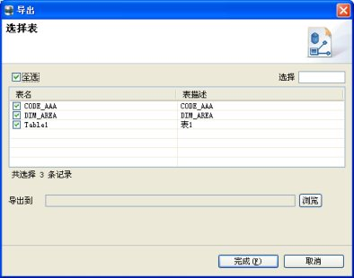

提供了导入导出功能，使之更为灵活。
新建一个ER模型文件（后缀名为xer），在编辑器的画布中右键弹出菜单，选择“导入”。如图：
选择“导入”后弹出对话框：
点击“从文件系统中选择”，弹出文件选择对话框，选择以xer为后缀名结尾的文件：
点击“打开”按钮，然后点击“确定”这个时候，被选中的文件已经导入到新建的模型文件中了。
在点击右键菜单“导入”后弹出的对话框中，选择“从工作空间选择”按钮，弹出如下对话框：
选择要导入的文件后，单击确定按钮，效果相同。
在导航视图右键“ER模型”树节点或者是任意包的树节点，如图：
单击导入后，弹出如下对话框：
选择导入的文件处于树节点所在的位置，这里是在包名为CUSTOMER_1G的包下，点击“浏览”按钮后弹出文件选择对话框：
选择要导入的文件后点击“打开”按钮，再点击“确定”按钮，这时完成了在树节点导入ER模型文件。如图：
选择需要导出的模型后，右键需要导出的模型，弹出右键菜单。或者直接在编辑器的画布上点击右键，弹出右键菜单。
选择“导出到新文件”，单击后弹出对话框，如图：

选择需要导出的表，单击“浏览”按钮选择文件导出的位置，点击“完成”按钮完成导出文件操作。
在导航视图右键ER模型文件对应的树节点，右键弹出菜单：
单击“导出”，弹出对话框：
选择要导出的文件，点击“浏览”按钮指定导出的位置，单击“确定”按钮完成导出。
在导航视图右键任意包也可以导出该包下的文件到指定路径下，导出过程参照上述过程。